大家好，我是江枫
OpenClaw爆火后，经常被问到的问题就是，xx数据怎么获取？
比如有想用OpenClaw获取金融数据便于自己做投资分析的，还有需要查询行业相关新闻。当前让大家比较困惑的点是，网上到是有很多API网站，但一个API只能查询某一类数据，要查询多个，得存一堆API，装N多Skills
比如我其实老早就想配置一个投资顾问龙虾，专门查询各大公司股价，当日行情，财报数据，行业新闻等。到处去找了很多平台，差不多得要4,5个平台
我突然意识到，OpenClaw部署后，其实最大的问题不是配什么多Agent，搞什么人格，属性定义什么的。最大的问题是如何把OpenClaw接入真实的网络数据
这样不但能聊天，还能查股价，搜学术论文、拉市场数据，也不需要逐个对接不同 API，不需要去维护独立的密钥管理、认证流程、频率限制和错误处理。
还别说，真让我找到一个这样的平台：QVeris
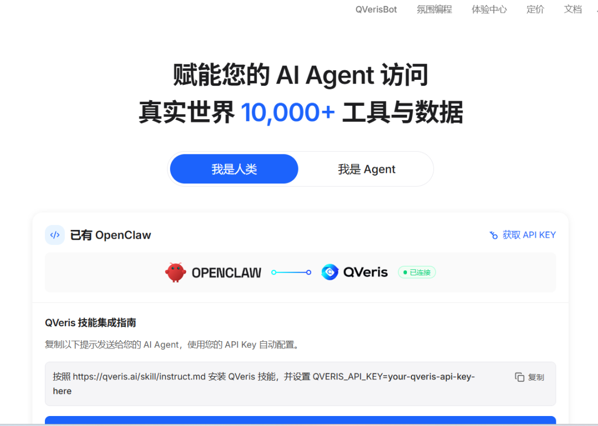
QVeris就是专门给Agent提供的技能商单，具备下面5个特性
1 统一数据接口：一个入口接入上万个 API 数据源，无需逐个对接
2 多领域覆盖：金融、医疗、体育、科研等
3 MCP 协议兼容：可与OpenClaw无缝协作
4 零 API 管理成本：用户不用自己管理多个 API Key、认证流程、频率限制
5 数据来源可溯：每条数据/回答带来源，可验证，而不是瞎编乱造
官网地址：https://QVeris.ai/
01
如何安装
在龙虾中安装非常简单，只需要2步
步骤一：获取API key
前往地址：
https://QVeris.ai/account?page=api-keys
申请一个API key
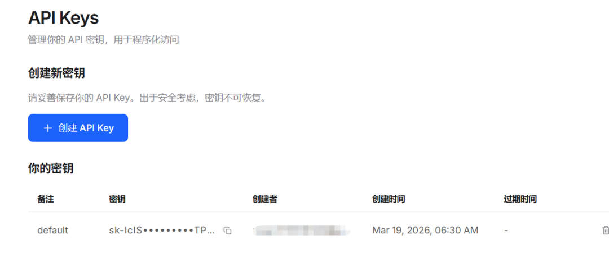
步骤二：复制下面的命令以及API key 给龙虾
Install QVeris skill following https://QVeris.ai/skill/instruct.md and use QVeris_API_KEY=sk-IcISXYk0Gf0oXKH9FqK9xGs-QqIOreuAPtT0wwCTPUA
龙虾会自动去安装Skills
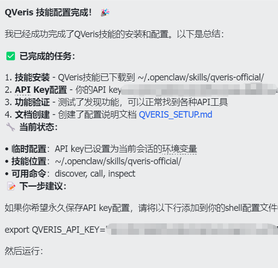
安装好后，首先咨询了QVeris有哪些能力，支持哪些API平台
3个核心能力：1 能力发现 2工具调用 3 工具详细查看
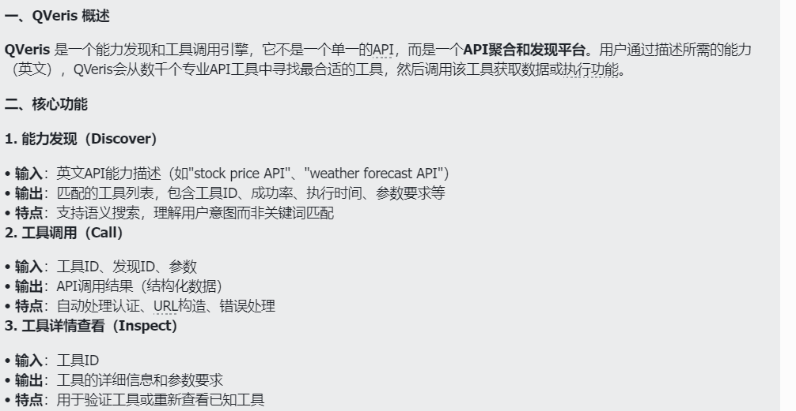
支持的API平台就蛮多了，金融数据这块就包含了Twelve Data，Financial Modeling Prep，Finnhub，Alpha Vantage4个平台。都是金融领域比较权威的平台
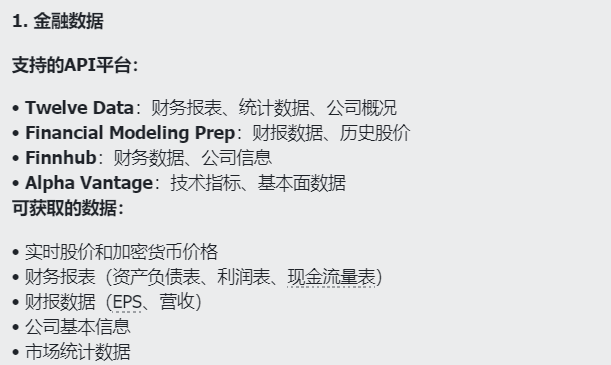
还支持天气查询平台
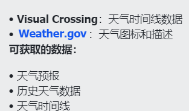
AI和媒体生成平台也支持。这有点6，还能文生图和文生视频
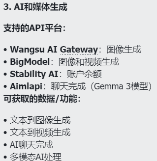
新闻和内容:
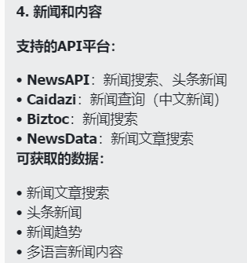
设置地理位置，翻译，OCR，TTS，网页处理权都支持，简直就是个技能超市
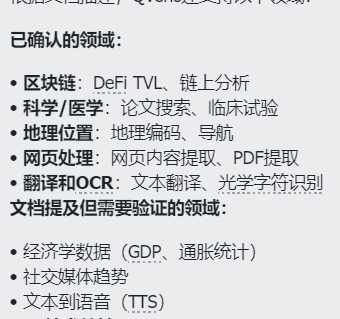
02
龙虾投顾登场
虽然QVeris支持查询的数据源很多，但我今天重点要讲的是在金融投资方面的应用
从OpenClaw爆火以后，不少搞投资的都找到咨询，怎么调教一个龙虾投顾。这里面最大的卡点就是数据获取
给大家看看我手机上常用的几个APP。基本上每天都会点这6个APP去看看新闻，数据什么的。
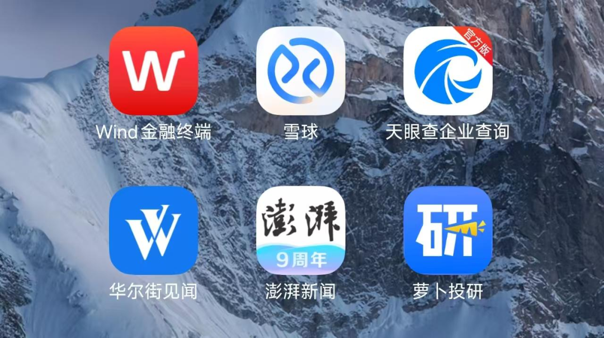
更别说有时候如果要下载财报，还得去网站上下载。反正就是各种APP和网站之间来回切换。挺费时间的
而且不少APP收的年费还挺贵，比如wind的年费就是几大千。金融领域是 AI Agent 最核心的落地场景之一，传统数据终端价格都比较贵，个人投资者其实是被收的信息税
现在，来看我如何用QVeris来实现各大数据的收集，主要从市场数据获取，财报获取/分析，公司基本面分析 三个方面来测试。
1 每日基本面查询
下面这些指数基本包含了各个指数方面的信息，通过这些指数能够大致判断当日盘面的走势如何
请查询如下数据：
沪深300指数
上证50指数
中证500指数
科创50指数
中证红利指数
上证红利指数
香港恒生指数
创业板50指数
分别当日收盘列出这些指数的信息，涨跌幅
二 列出当日资金流入排名前10的行业，资金流出排名前10的行业
三 列出10个当日创新高的股票
四 列出10个当日最值得关注的财经新闻综合以上信息，给出市场展望以及风险提示
首先对于不同的数据，采用了不同的工具来进行获取
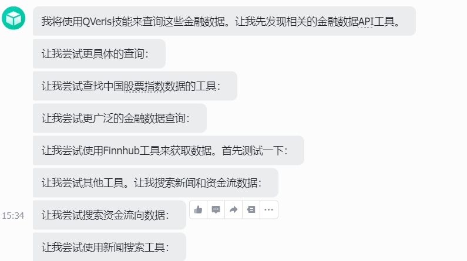
让我们来看都查到哪些数据了吧，首先是指数数据表现
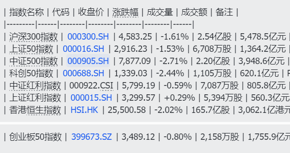
资金流入排名：
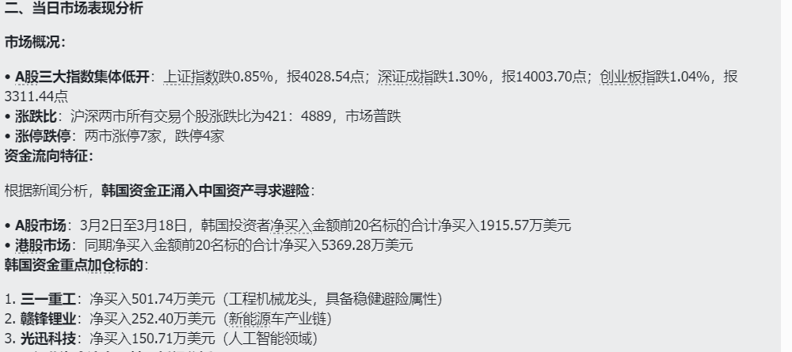
行业资金流向
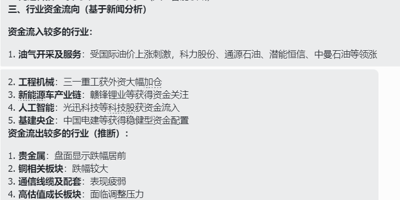
当日最值得关注的10个财经新闻
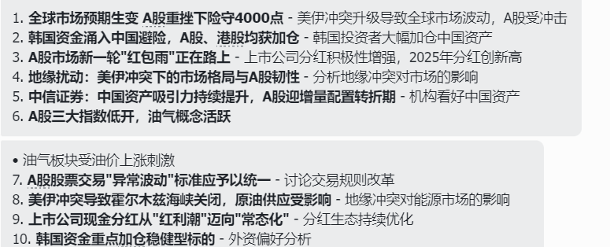
市场展望以及风险提示
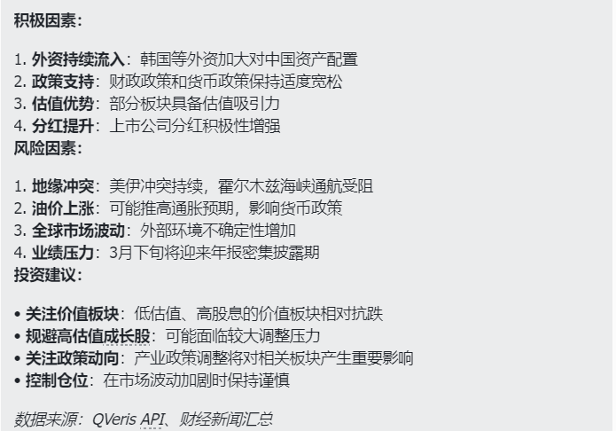
去年为了搭这样一个金融早报功能，还专门 用n8n搭了个工作流，到处去找了一些API，才凑齐这些数据。现在安装QVeris后，比n8n方便得多，n8n只能设置周期发送，但现在在飞书上对话就可以获取了，且任意时候获取都可以
2 财报获取与解读
腾讯不是刚发布了2025年财报，就用腾讯财报来做测试
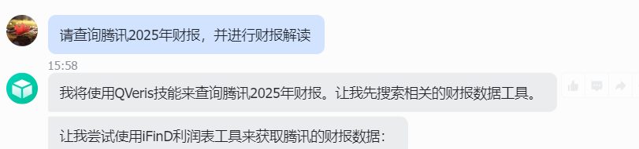
财报的数据都比较多，我就不贴图了，录了个屏给大家看看
我去翻了下财报，数据都获取得没有什么问题。以往都是我去网站上把财报下来，然后文件传递给大模型进行解读。现在下载，上传的环节都可以省了。直接问你的龙虾投顾就行
甚至你还可以根据你的需要，制定龙虾解读财报的专用prompt或者skills，这样就可以做到按需定制
而且不光是国内的，海外公司的也可以获取到
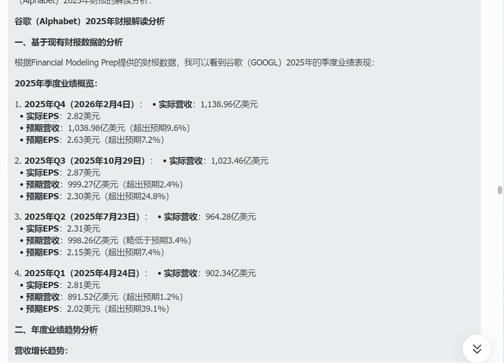
三 企业基本面分析
企业的基本面调查，需要的数据蛮多，有股价，盈利，市场环境各个因素方面的影响
这里我让龙虾调研英伟达这家公司
请帮我调研英伟达这家公司，从最近3个月股票波动，盈利情况，市场环境以及AI发展各个方面进行，并给出调研结果，最后能预估英伟达未来3个月的股票走势
还是录了个视频让大家看看
整个调研报告从公司概况，最近3个月股票波动分析，盈利情况分析，市场环境分析，AI发展战略与进展，关键合作伙伴与客户动态，风险因素分析，未来3个月股票走势预估 这8个方面对公司进行了还算比较详尽的评估
如果你给龙虾再装上一个PPT的skills. 一份合格线以上的企业分析PPT就做好了
三个测试下来，QVeris的数据获取能力确实非常强。如果是我自己搭工作流的方式来做，调数据就得费半天，如果你是工作流的小白，还得花时间去学coze，n8n这样的平台。
现在openclaw+skills+QVeris，任何人都可以轻松拥有一个属于自己的投顾龙虾。且没有什么学习成本，开箱即用。
写在最后
2026 龙虾的爆火其实表示AI Agent 市场进入爆发期，Andrej Karpathy就公开撰文呼吁为万亿智能体构建基础设施。
而基础设施最重要的一环就是接入数据世界。普通人就算部署了龙虾，如果无法接入真实，来源广的数据，也只能当个聊天工具用。一旦有了真实数据，龙虾可以让普通人也能拥有机构级信息处理能力
普通 AI 是你问我搜，QVeris 赋能的 AI 是：你说目标，我帮你干——能并行调用多个数据源，综合分析后给结果
这才是龙虾的最佳拍档！
如果觉得内容不错的话，请帮一键三连，转发给你的朋友
另外想第一时间收到推送，记得将公众号加个星标哦
欢迎交流：jiangfeng2066